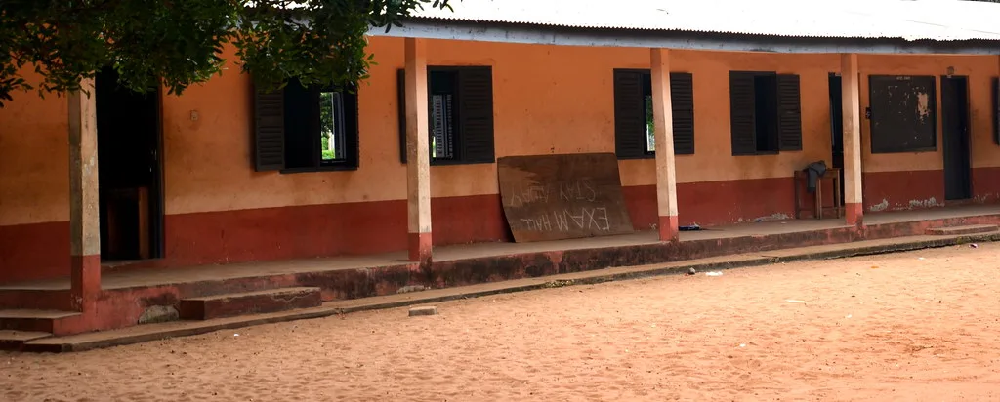

19일 치러지는 2027학년도 대학수학능력시험을 앞두고 인공지능(AI) 기기를 이용한 부정행위 우려가 커지면서 정부가 막판 대책 마련에 나섰다. 최근 세무사 시험 수석 합격자가 AI 기기로 부정행위를 했다고 시인하면서 국가시험 관리 전반에 대한 불신이 번진 탓이다. 교육부는 시험 일정은 그대로 유지하되 시험장 감독과 기기 통제를 대폭 강화하겠다는 입장을 밝혔다.
우선 수능 연기 가능성에는 선을 그었다. 교육부는 16일 정례 브리핑에서 수능 연기는 검토하지 않고 있다고 밝혔고, 최교진 교육부 장관도 시험을 미루면 오히려 더 큰 혼란이 생길 수 있다는 취지로 설명했다. 수십만 명의 수험생과 대학 입시 일정이 한꺼번에 맞물려 있는 만큼 일정 변경보다는 현장 관리 강화가 현실적이라는 판단으로 풀이된다. 시험을 코앞에 둔 수험생과 학부모 사이에서는 갑작스러운 규정 변경에 따른 혼선을 걱정하는 목소리도 나온다.

가장 눈에 띄는 변화는 스마트기기 통제다. 정부는 수험생이 가진 스마트폰뿐 아니라 스마트워치와 무선 이어폰, 태블릿PC 등 모든 스마트기기를 사용하지 못하게 하고 시험장에 제출하도록 할 방침이다. 전국 1300여 개 시험장에 스마트안경 착용 여부를 확인하는 인력을 배치하는 방안도 거론됐다. 겉보기에 일반 안경과 구분이 어려운 기기가 늘어난 만큼 감독관의 육안 확인만으로는 한계가 있다는 지적을 반영한 것이다.
통신 차단은 쉽지 않은 과제다. 정부는 시험 시간 동안 모든 시험장의 공공 와이파이를 끊는 방안을 추진하고 있지만, 휴대전화 전파 자체를 막는 것은 법적·기술적 제약이 크다. 교육부는 전파법상 국가 안보와 직접 관련되지 않으면 전파 차단이 허용되지 않는다고 설명했고, 과학기술정보통신부와 협의를 이어가고 있다. 시험장 주변 주택가와 응급 상황에 미칠 영향도 고려해야 해 LTE·5G 차단까지는 어렵다는 관측이 많다.
처벌 수위도 높아진다. 수능에서 스마트안경 등을 이용한 부정행위가 적발되면 해당 시험을 무효로 하고 이듬해 응시 자격도 제한하는 방침이 제시됐다. 응시 자격 정지 기간을 현행 1년에서 3년으로 늘리는 고등교육법 개정도 함께 추진된다. 교육부는 초소형 카메라 등을 활용한 부정행위에 대비해 감독관 유의사항을 보완하고, 의심 행동을 식별하는 지침을 시도교육청에 배포할 계획이다.
현장에서는 실효성에 대한 의문도 적지 않다. 열화상 카메라를 쓰더라도 부정행위 장비의 발열만을 가려내기는 어렵다는 점을 교육부도 인정했고, 소지품 검사 역시 인권 침해 논란과 시간 부족 문제가 따른다. 시험을 불과 며칠 앞두고 대책이 나오면서 늑장 대응이라는 비판도 제기됐다. 결국 이번 수능에서는 감독관의 세심한 관찰이 사실상 가장 중요한 방어선이 될 것이라는 전망이 나온다.
교육부는 17일 추가 대책을 내놓겠다고 예고했으며, 내년 수능부터는 시험장용 전파탐지기 같은 기술 장비 도입도 전문기관과 검토할 계획이다. 수험생들은 시험 당일 반입 금지 물품을 다시 한번 꼼꼼히 확인하고, 스마트워치처럼 무심코 착용하는 기기도 미리 빼 두는 것이 안전하다. AI 기기가 빠르게 진화하는 만큼 국가시험 관리 체계 전반을 손보는 근본적인 논의가 뒤따라야 한다는 목소리가 커지고 있다.